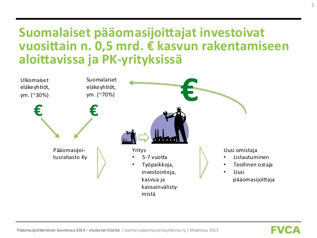

Pääomasijoittaminen | Mitä on pääomasijoittaminen? | Pääomasijoittajat ry

Toggle navigation Liity jäseneksi Jäsensivut In English Ajankohtaista Uutiskirjeet Uutishuone Tapahtumat Kasvunrakentaja 2020 Ehdotukset hallituskaudelle 2019-2022 Tutkimukset ja tilastot Yrittäjille Näin haet pääomasijoitusta -opas Kuinka löydän oikean pääomasijoittajan? Mitä on pääomasijoittaminen? Yhteistyö pääomasijoittajan kanssa Sijoittajahaku Kasvutarinat Opiskelijoille Mentorit Pääomasijoittajien gradukilpailu Medialle Uutishuone Tutkimukset ja tilastot Yhteystiedot Kuvia Yhdistys Tietoa meistä Yhteystiedot Jäsenet Hallitus ja työryhmät Vuosikatsaukset Vastuullisuus Säännöt ja suositukset Nordics.vc Pääomasijoittaminen on loistava keino vauhdittaa yrityksen kasvua. Pääomasijoittamisen etuja muihin rahoitusmuotoihin nähden ovat muun muassa ammattimainen ote yrityksen kasvattamiseen sekä pääomasijoittajan yritykseen tuoma osaaminen ja kontaktit. Mitä on pääomasijoittaminen?
Pääomasijoituksia tehdään sekä startupeihin että vakiintuneisiin kasvuyrityksiin.
Pääomasijoittamisen hyötyjä
1. Arvon kasvattaminen
Sijoituksen yhteydessä yrittäjä tai myyjä luopuu yleensä suurimmasta osasta omistustaan. Usein hän jää tehtävässä yritysjärjestelyssä kuitenkin omistajaksi. Osuus pääomasijoittajan kasvattamasta yrityksestä voi olla viiden vuoden päästä arvokkaampi kuin 100 prosentin omistus alkuperäisestä yrityksestä.
2. Riskin jakamista yhdessä
Pääomasijoittajan rahoitus on yleensä oman pääoman ehtoista. Pankkilainaan verrattuna pääomasijoituksella on huonompi etuus esimerkiksi konkurssitilanteessa. Sijoitusta ei lähtökohtaisesti makseta takaisin pääomasijoittajalle sijoituksen aikana. Kaikki edelle kirjoitettu tarkoittaa sitä, että pääomasijoittaja jakaa liiketoiminnan ja omistamisen riskiä yhdessä yrittäjän ja johdon kanssa. Sijoittaja saa tuottoa vain, jos yrityksen arvo kasvaa. Onnistuminen mitataan irtaantumisvaiheessa.
3. Kassavirtarahoitusta nopeampaa kasvua
Kasvaminen kassavirralla on hidasta, ja kovaan kasvuun tähtääville yrityksille se voi olla jopa mahdotonta. Kasvaville markkinoille pyrkii usein monia yrityksiä samaan aikaan. Ne, jotka pystyvät kasvamaan pääomasijoittajan rahoituksen turvin ja tulevaan kasvuun investoiden, saavat etumatkan, joka kasvaa vuosi vuodelta. Näin markkinat voivat kadota yritykseltä, jolla on esimerkiksi teknologisesti paras ratkaisu, mutta ei riittävästi rahoitusta kasvaa tappiota tehden. Pääomasijoittajan osallistuminen yrityksen rahoitukseen edistää usein myös pankkilainan saamista.
4. Osaamista ja kontakteja
Pääomasijoittajien kautta yritys saa käyttöönsä usein suuren joukon eri alojen osaamista. Pääomasijoittajat ovat sijoittaneet suureen joukkoon kasvuyrityksiä. Näin heillä on kokemusta ja tietoa kasvun karikoista ja oikopoluista. Tästä yritysjoukosta on hyvä etsiä toimintamalleja, hyviä käytäntöjä ja benchmarkkeja esimerkiksi eri maiden markkinoille menemiseen. Startupit tarvitsevat usein 3-4 rahoituskierrosta rahoittamaan kasvua. Kokenut pääomasijoittaja pystyy auttamaan yritystä uusien rahoituskierroksien kokoamisessa. Kasvuyrityksiä pääomasijoittajat tukevat tarvittaessa lisärahoituksella esimerkiksi isompien yritysostojen yhteydessä.
5. Rahoitusta muutostilanteeseen
Pääomasijoitus kasvuyritykseen vaatii yleensä muutoshalua yrityksessä. Isompi yritys haluaa irtaantua jostain liiketoiminnasta, joka on kannattavaa, mutta ei yrityksen ydintä. Yrittäjä haluaa kasvattaa ja kansainvälistää yritystään, mutta tarvitsee lisää osaamista ja resursseja. Julkinen toimija haluaa yksityistää liikelaitoksen. Yrityksen omistajat tunnistavat tarpeen toimialajärjestelyyn. Yrittäjä haluaa eläköityä lähivuosina. Nämä ovat tilanteita, joissa pääomasijoitus on luonteva ratkaisu.
6. Unelman toteuttaminen
Pääomasijoittajan tekemä sijoitus voi mahdollistaa yrittäjän unelman toteuttamisen. Pääomasijoittaja tuo yritykseen lisää resursseja ja osaamista, jotka auttavat kasvattamaan yritystä aiempaa suuremmaksi ja arvokkaammaksi ja usein myös verrokkiyhtiöitä nopeammassa aikataulussa.
7. Varallisuuden hajauttaminen
Vakiintunut kasvuyritys voi olla hyvin kannattava jo ennen pääomasijoitusta. Pääomasijoituksen avulla yrittäjä pääsee hajauttamaan yrityksessä kiinni olevaa varallisuuttaan, kun yrittäjä saa merkittävän osan yrityksen arvosta itselleen rahana (tai koko yrityksen arvon, jos järjestelyyn ei sisälly myyjän tekemää takaisinsijoitusta yhtiöön). Startupin omistajille pääomasijoitus pienentää muun rahoituksen tarvetta, ja näin pienentää yrittäjien henkilökohtaista riskiä.
8. Tavoitteellisempi hallitustyöskentely
Pääomasijoittaja tuo yleensä mukaan ammattimaisen hallintomallin hallitustyöskentelyyn. Monet yrittäjät laiminlyövät hallitustyöskentelyn alkuvaiheessa. Pääomasijoittajat tuovat hyvän hallinnon periaatteet mukaan yrityksen arkeen. Tämä on ehdoton edellytys myös yrityksen listautumiselle tai myymiselle myöhemmin.
“Kannattaa ottaa rohkeasti luuri käteen ja soittaa. Se ei maksa mitään. Sijoittajat ottavat varmasti mielellään vastaan, jos keissi kuulostaa yhtään kiinnostavalta. Vaikka sijoitus ei toteutusikaan, saa ilmaista sparrausta yrityksen kehittämiseen.”
Pia Kåll, Capman
Löydä sopiva pääomasijoittajaPääomasijoittamisen kulku
Pääomasijoitukset lähtevät liikkeelle kolmella eri tavalla:
1. Yrittäjä tai yhtiö on yhteydessä
Startupit ovat usein itse aktiivisempia sijoituksen hakemisessa kuin kasvuyritykset. Silti myös kasvuyritykset voivat aloittaa sijoitusprosessin itse. Yhtiössä voi olla tulossa merkittävä muutos esimerkiksi omistajayrittäjän eläköitymisen, kansainvälistymisen, ajankohtaisen yritysoston tai isomman investoinnin johdosta. Tällöin yrittäjä tai yhtiö voi olla itse yhteydessä potentiaalisiin pääomasijoittajiin.
2. Neuvonantaja kilpailuttaa pääomasijoittajia
Kasvuyritykset voivat käyttää halutessaan neuvonantajana investointipankkia auttamaan pääomasijoittajan löytämisessä. Tällöin neuvonantaja on aktiivinen osapuoli, joka etsii sopivat sijoittajat, neuvottelee heidän kanssaan ja mahdollisesti järjestää huutokaupan yrityksestä.
3. Sijoittaja tunnistaa kiinnostavan kohteen
Kasvuyritykset eivät välttämättä tiedä pääomasijoittamisesta tai eivät tunnista sopivansa sijoituskohteeksi. Pääomasijoittajat tutkivat myös itse jatkuvasti markkinoita löytääkseen hyviä yrityksiä, joilla on potentiaalia kasvaa.
Sijoitus
Ennen sijoitusta pääomasijoittaja
tutustuu tarkemmin yritykseen ja
suunnittelee kasvustrategiaa
yhdessä yrityksen kanssa.
Arvon kasvattaminen
Pääomasijoittaja kasvattaa yritystä ja
sen arvoa tuomalla apua esimerkiksi
hallitustyöskentelyyn, rekrytointeihin
ja kansainvälistymiseen.
Irtautuminen
Pääomasijoitus päättyy aina
yrityksestä irtautumiseen, jolloin
pääomasijoittaja ja muut omistajat
saavat tuoton kasvun rakentamisesta.
Vaiheiden kokonaiskesto tyypillisesti 3 – 7 vuotta
Lue lisää pääomasijoittamisesta“Menestystarinoiden rakentamiseen täytyy olla valmis laittamaan aikaa. 3-7 vuotta on minimi pääomasijoittajan ja yrittäjän yhteistyölle. Tämä aika usein aliarvioidaan. Sijoittaja tekee paljon töitä varmistaakseen, että yrittäjällä on halu ja kyky viedä yritys markkinoille.”
Sami Lampinen, Inventure
KASVUTARINAT
Tutustu kohdeyritysten kasvuun
Minkälaista on työ yrityksen onnistuneen kasvun takana? Mikä on pääomasijoittajan rooli kasvutarinan syntymisessä? Näihin kysymyksiin vastaa Pääomasijoittajien Kasvutarinat -sarja, joka kokoaa yhteen parhaimpia, mielenkiintoisimpia ja innostavimpia tarinoita yritysten kasvusta.
Lue lisääPääomasijoittaminen sopii kasvunnälkäisille yrityksille
Startup-yritykset pyrkivät yleensä voimakkaaseen kasvuun. Startupit eivät ole tyypillisesti aluksi voitollisia, kun ne rakentavat tuotettaan ja etsivät markkinaansa. Tätä varten startupit nostavat usein rahoitusta pääomasijoittajalta. Samalla pääomasijoittajasta tulee yrityksen vähemmistöomistaja. Pääomasijoittajat pyrkivät kasvattamaan yrityksen arvoa työskentelemällä yrityksen kanssa aktiivisesti ja sitten irtaantumaan yrityksestä yrityskaupan tai listautumisen kautta.
Pääomasijoittajat rahoittavat ja tukevat myös vakiintuneiden kasvuyritysten kasvua. Yleensä näissä järjestelyissä suurin osa kokonaissijoituksesta maksetaan kauppahintana yhtiön vanhoille omistajille (myyjille) ja loppuosa kohdistuu yhtiön kasvun rahoittamiseen. Suurin osa kasvuyrityksiin tehtävistä sijoituksista on Suomessa enemmistösijoituksia, mutta markkinoilla toimii myös muutamia vain vähemmistösijoituksia vakiintuneisiin kasvuyrityksiin tekeviä sijoittajia.
Sopiiko pääomasijoittaminen sinulle? Mistä sopiva pääomasijoittaja?
Epicenter
Mikonkatu 9
00100 Helsinki
Pääomasijoittajat ry edistää yritysten kasvua, kilpailukykyä ja kansainvälistymistä toimivan, kasvavan ja tehokkaan pääomasijoitusalan avulla. Pääomasijoittajat ovat kasvun rakentajia.
Sijoittajahaku Medialle Tietosuojaseloste